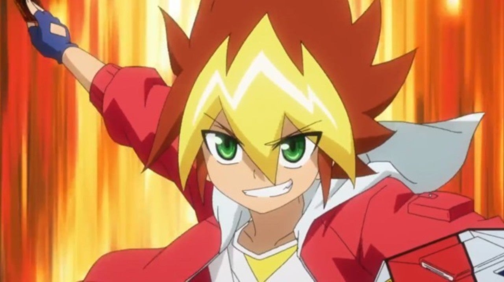
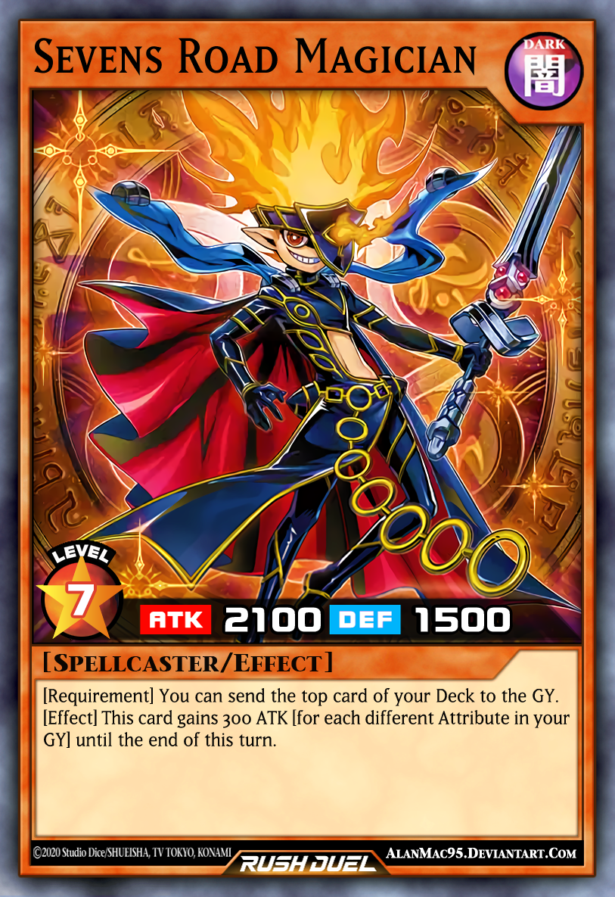
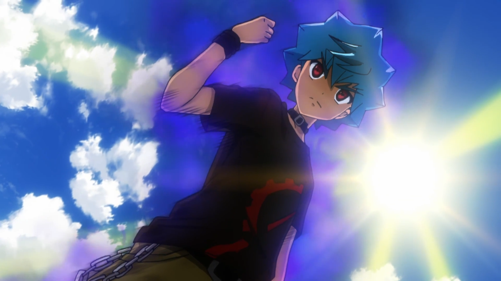
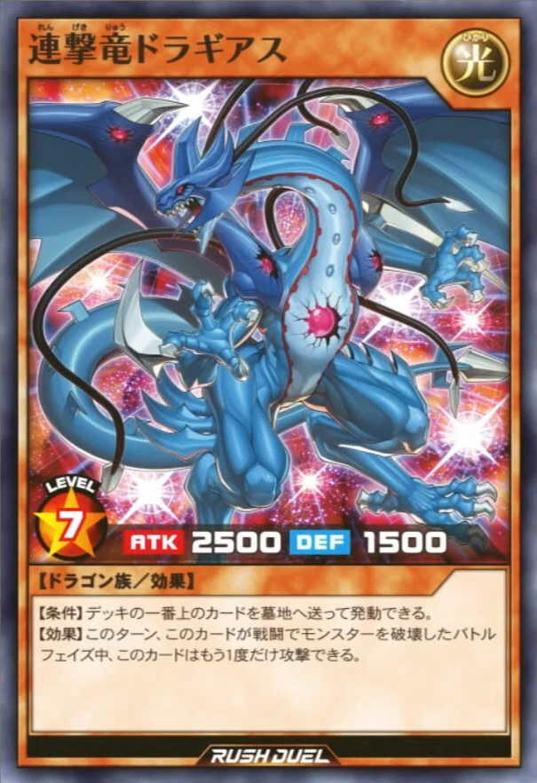
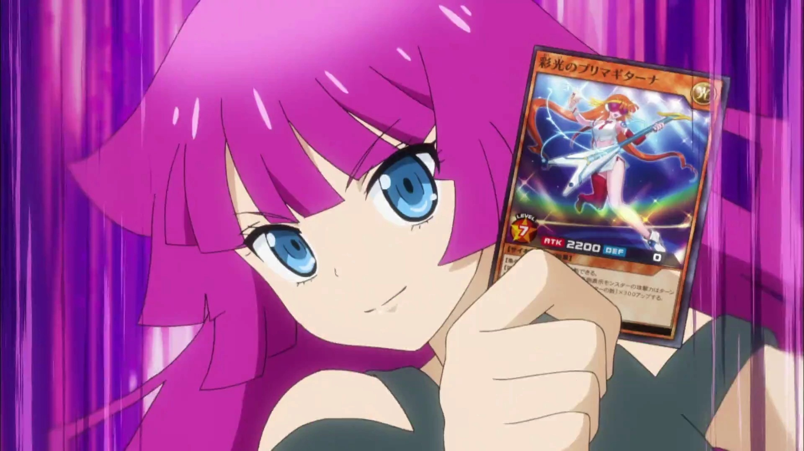
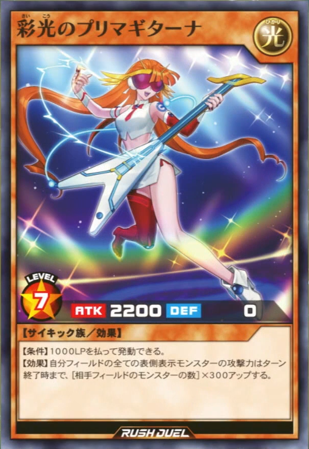
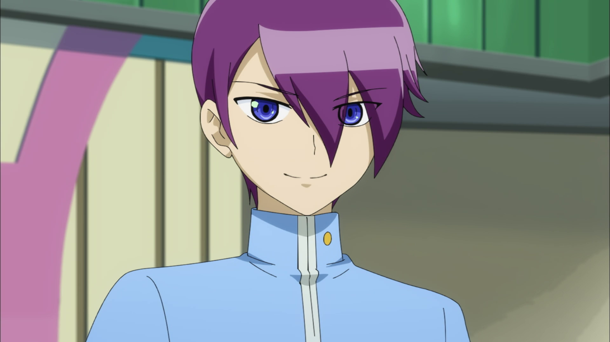
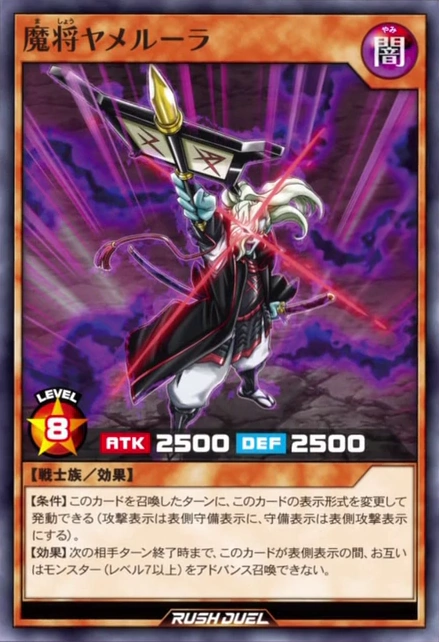

Yuga Ohdo est le principal protagoniste de Yu-Gi-Oh!SEVENS. C'est un élève de cinquième année enthousiaste qui bricole des machines et invente de nouvelles règles, qui s'appliquent à la création de Rush Duels .


Lucidien Kallister, dit Tatsuhisa Kamijo dans la version japonaise, surnommé Luke dans les deux versions, est un personnage principal du Yu-Gi-Oh! Série SEVENS. Il est un jeune homme aspirant, qui vise à devenir le « roi de Duels » en prenant part à Yuga Ohdo de Rush Duels .


Romin Kassidy , dit Romin Kirishima dans la version japonaise, est un personnage de Yu-Gi-Oh! L'anime SEVENS. Elle est la camarade de classe de Yuga Ohdo , et une étudiante et sportive talentueuse qui est la guitariste de RoaRomin , le groupe de l'école élémentaire. Romin s'est à l'origine lié d'amitié avec Yuga et ses amis avec l'intention de les espionner pour son cousin, Roa


Gakuto Sogetsu est un personnage de Yu-Gi-Oh!SEVENS. Il est un président catégorique et discipliné du conseil des élèves de Goha 7th Elementary. Gavin est une personne sérieuse et disciplinée, qui n'a pas été en retard à l'école un seul jour. Il transmet cette vertu à son style Sogetsu Dueling et pense que les Master Duels actuels sont bien tels qu'ils sont.

